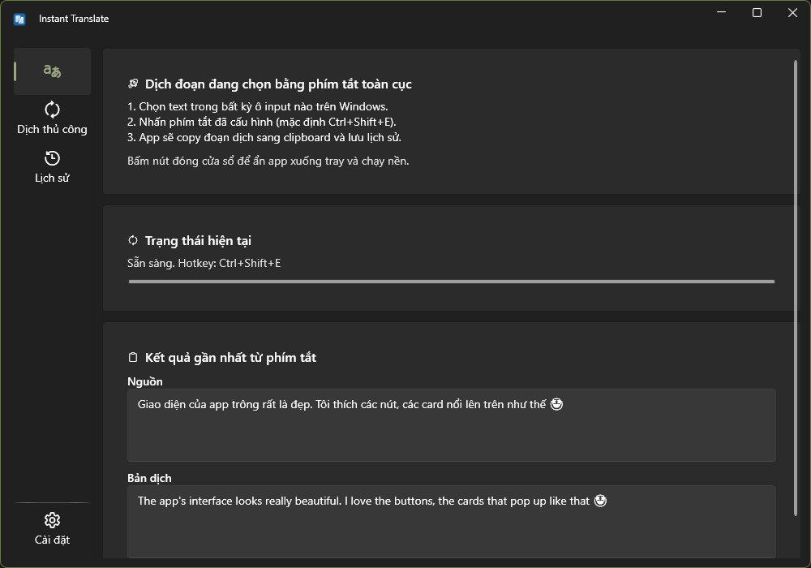
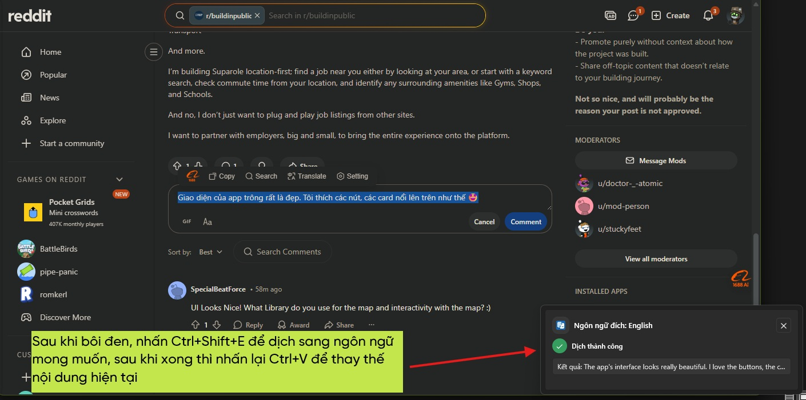

Nhanh gọn với phím tắt
Chọn đoạn văn bản ở bất kỳ ứng dụng nào trên Windows, nhấn phím tắt là dịch ngay.
APP DỊCH NHANH CHO WINDOWS
App giúp bạn dịch nhanh đoạn văn bản đang chọn sang ngôn ngữ cố định bạn đã đặt sẵn. Rất tiện khi viết bình luận trên Reddit, Twitter, trả lời chat với người nước ngoài, hoặc đăng nội dung bằng ngôn ngữ khác từ tiếng chính bạn đang dùng (ví dụ Tiếng Việt). Bạn có thể chọn Gemini hoặc OpenAI-compatible theo nhu cầu, giao diện cài đặt rất dễ hiểu cho người mới.
GIAO DIỆN THỰC TẾ


TÍNH NĂNG CHÍNH
Chọn đoạn văn bản ở bất kỳ ứng dụng nào trên Windows, nhấn phím tắt là dịch ngay.
Bạn có thể chọn nhiều ngôn ngữ đích trong cùng một khu vực cài đặt, tiện cho nhiều nhu cầu sử dụng.
Dễ dàng chọn và đổi giữa nhiều model AI phù hợp với tốc độ, chất lượng và chi phí bạn mong muốn.
Native app cho Windows nên hoạt động mượt, khi chạy nền chỉ chiếm khoảng ~50MB RAM.
API key hoàn toàn được lưu trên máy bạn, không lo bị lộ API key.
Dữ liệu đi thẳng từ máy bạn đến nhà cung cấp AI bạn chọn, không qua server trung gian của app.
CÁCH DÙNG
ĐƯỢC NHẮC ĐẾN
Link tải bên dưới đã có sẵn cả bản cài Windows x86 và x64. Chỉ cần tải về, cài đặt và dùng ngay.
FAQ
Có. Bạn có thể bật tùy chọn chạy nền để app ẩn xuống system tray và tiếp tục lắng nghe hotkey, mức RAM thường chỉ khoảng ~50MB.
API key hoàn toàn được lưu trên máy bạn, không lo bị lộ API key.
Được lưu hoàn toàn trên máy bạn, không gửi đến bất kỳ server nào khác.
Có. App được phát hành miễn phí để tải và sử dụng. Chi phí phát sinh (nếu có) chỉ đến từ API của nhà cung cấp AI bạn kết nối.